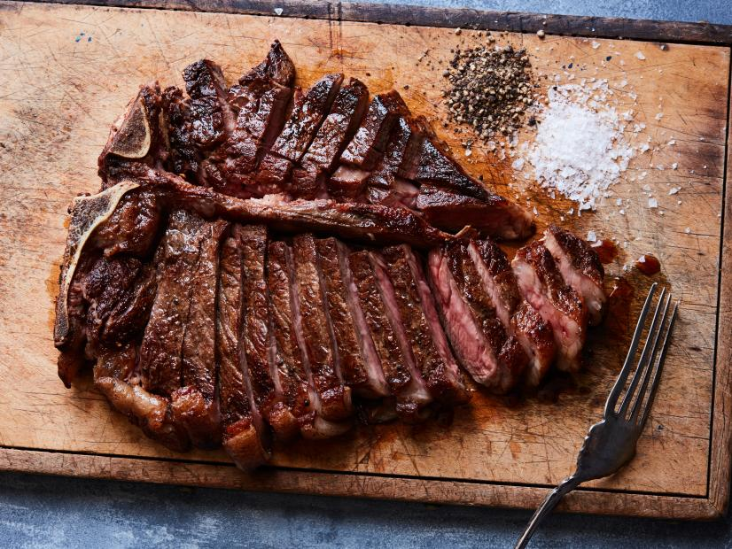

Pan Seared Steak

Description
Stay in and bring the steakhouse to you. It's easier than you think to make a juicy, perfectly-seared T-bone at home. A hot pan and a few ingredients are all you need for this impressive dinner.
INGREDIENTS
- 1-1/2 pound bone-in T-bone or porterhouse steak
- Rock salt and freshly ground pepper
- 1 tablespoon oil
INSTRUCTIONS
- Preheat the oven to 450 degrees F. A half-hour before cooking, remove steak from refrigerator.
- Heat a large skillet over high heat. Pat steak dry and season generously with salt and pepper. Add oil to hot skillet and when it begins to smoke add steak. Reduce heat slightly and cook steak until browned, about 4 minutes on each side. Transfer skillet to the oven. Roast until an instant-read thermometer inserted sideways into the steak registers 120 degrees F for medium-rare, about 6 to 8 minutes. Transfer steak to a cutting board and let it rest for 10 minutes. Cut steak from the bone and carve meat across the grain.
Cook's note
Porterhouse and T-bone steaks are interchangeable in this recipe. Either way, look for a 1 1/2-pound steak that is 1 1/2 to 2 inches thick.